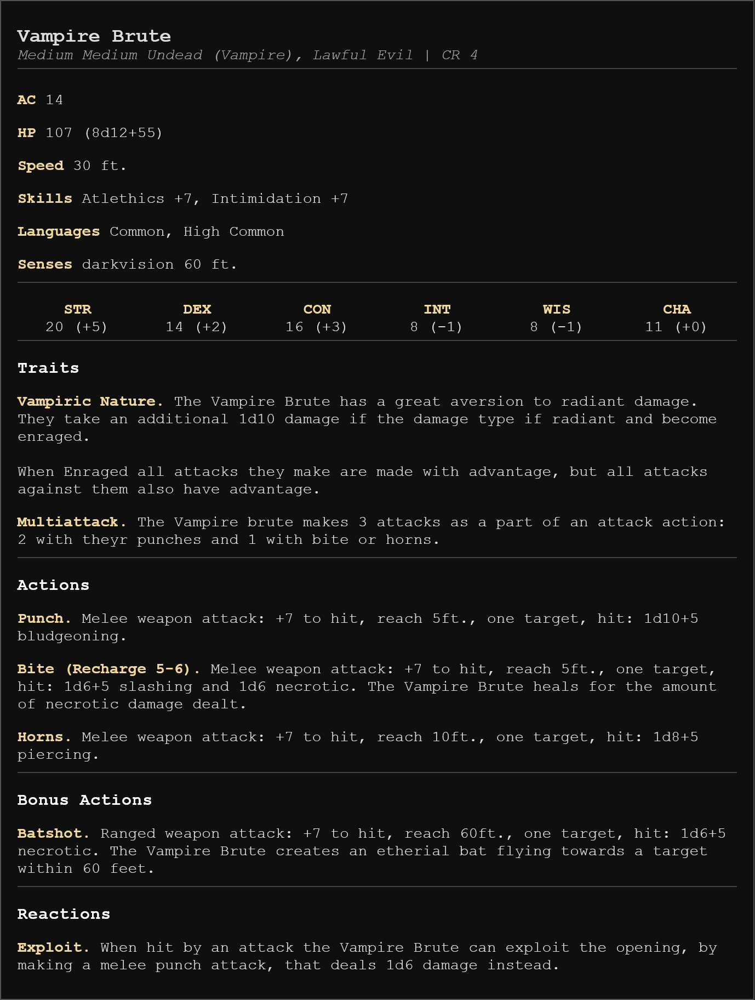

Reactive Creatures
While in the forming years of the hobby most of the statblocks one would encounter would be normal static ones, that did not change as the encounter went on, the idea of reactive creature design started picking up steam in the late 2010’s.
Many today are not even aware that the static creature design, even if only for encounters of importance, was at some point almost the only ways the things were done.
What even is reactive creature design?
While many know it instinctually, it is important to ensure we are all on the same page. In my book the reactive creature (statblock) design is a design that actively changes the composition of combat encounter in reaction to the things going on around.
It is the easiest to show it on an example. The static creature design would be a vulnerability system from DnD 5e, where if the creature takes X damage of a certain type the damage is doubled. On the other hand the reactive creature design in the same manner would be a creature losing an access to a certain ability for a short duration after being hit by a specific damage type.
We can see that they achieve a similar thing – hindering the opponent, when a certain thing is done against them, and yet one is just a static, numeric outcome, while the other presents the players with an opening to exploit, making the combat more dynamic and with that more engaging.
It is important to keep in mind, that the effects do not have to always be positive for the players in such encounters. Certain actions/attacks may enrage or even strengthen the opponent, which will be partially shown in the example statblock that can be found later in this article.
Why is the reactive creature design?
Reactive creature design is one of my favorite ways of spicing up an encounter design, instead of using the old and plain resistances/vulnerabilities, as it can go both ways, even at the same time. It opens a completely new school of “elite” enemy design and sometimes may even completely change the tone of the fight.
In the recent years has been recognized by many people, including the designers at Wizards of the Coast and has proven to be a useful knowledge/skill to have, while trying to give your players the best experience possible.
But… Keep in mind that if every monster is reactive the feature loses its novelty. The resistances and vulnerabilities are good enough and allow you to not overuse the “cool” mechanic. If you completely replace them your players will just get used to it and it will become boring, or sometimes even annoying, as it can considerably bog down the combat, which in many modern TTRPGs is already a slow mess.
An Example

Today as an example I show you the Vampire Brute – a professional pit fighter from the underbelly of an industrial city, domineering the entire pit fighting society whit his inhuman reflexes and power.
This statblock was created using a new tool available on the website – the Statblock builder, which you may try for yourself and also download the effects as a PNG. If you want a version of this statblock, that can be just copied and pasted, worry not – it can be found in the Statblocks section on my website, shortly after the article goes live.